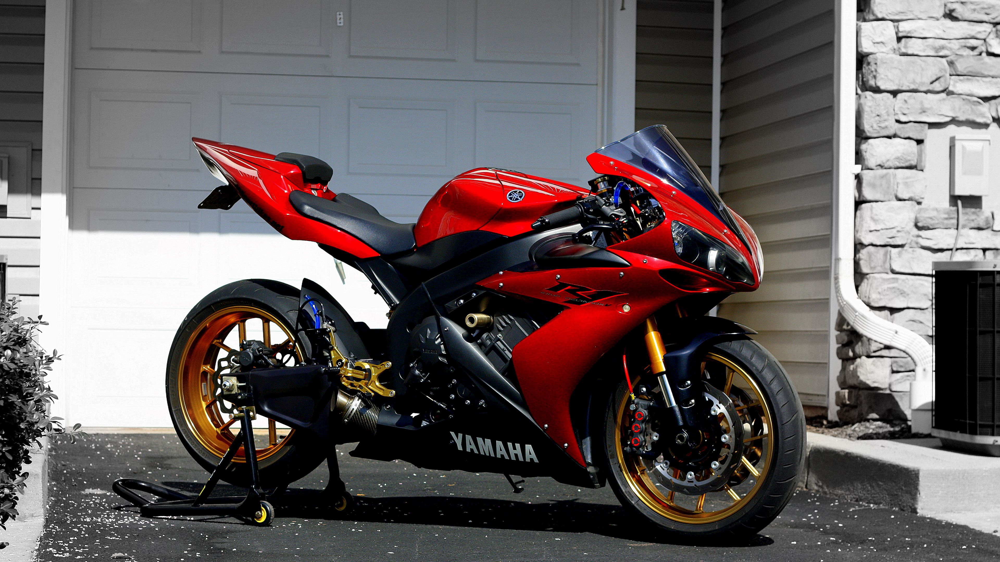

On-wheels es una renombrada concesionaria especializada en la venta de camiones, motos y autos. Nos enorgullece ofrecer una amplia selección de vehículos de calidad para satisfacer las necesidades y preferencias de nuestros clientes. Ya sea que estés buscando un medio de transporte confiable para tu negocio, un vehículo personalizado para tus aventuras en carretera o una motocicleta elegante para disfrutar de la libertad sobre dos ruedas, en On-wheels encontrarás opciones para todos los gustos.
Nuestros servicios son ideales para aquellos que desean adquirir un vehículo nuevo o de segunda mano de manera segura y confiable. Podrás encontrar una gran variedad de marcas y modelos, desde camiones de carga robustos y confiables hasta motocicletas deportivas y autos familiares. Además, ofrecemos asesoramiento experto para ayudarte a tomar la mejor decisión de compra y brindamos opciones de financiamiento flexibles para que puedas adquirir el vehículo de tus sueños sin complicaciones.
nos enorgullece contar con un equipo dedicado de profesionales del sector automotriz. Nuestro personal altamente capacitado y experimentado está listo para brindarte un excelente servicio, responder a todas tus preguntas y guiarte a lo largo de todo el proceso de compra. Nos esforzamos por brindar una experiencia satisfactoria y transparente para cada cliente que visita nuestras instalaciones.
La seguridad es una de nuestras principales prioridades. En On-wheels, nos aseguramos de que todos los vehículos que ofrecemos estén en buenas condiciones y cumplan con los estándares de calidad establecidos. Realizamos exhaustivas inspecciones y pruebas para garantizar que cada vehículo esté en óptimas condiciones mecánicas y estéticas antes de ponerlo a la venta. Además, contamos con una sólida política de garantía y servicio postventa para brindarte tranquilidad y respaldo después de tu compra.
En resumen, en On-wheels encontrarás una amplia gama de camiones, motos y autos de calidad, un equipo profesional y amable para asistirte en tu elección, y un enfoque en la seguridad y la satisfacción del cliente. Estamos comprometidos a brindarte una experiencia de compra excepcional y a ayudarte a encontrar el vehículo perfecto que se ajuste a tus necesidades y estilo de vida.